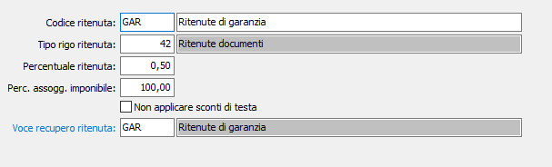

Aliquote ritenute documenti
Nella tabella devono essere gestite le varie tipologia di ritenute gestite nelle fattura di vendita. Nel campo “Tipo rigo ritenuta” deve essere indicato un tipo rigo specifico da utilizzare in fase di emissione fatture per generare le righe relative alla ritenuta calcolata, che deve essere configurato come il rigo di servizio/recupero spese. Nella “Percentuale ritenuta” deve essere indicata la percentuale, da applicare all'imponibile soggetto, per la determinazione della ritenuta. Nella “Percentuale assogg. Imponibile” deve essere indicata la percentuale di assoggettamento da applicare al totale del totale merce lordo al fine di determinare la base imponibile della ritenuta. Il campo “Non applicare sconti di testa” definisce se gli sconti di testa devono essere applicati al totale merce lordo al fine di determinare la base imponibile della ritenuta e se sul rigo della ritenuta calcolata devono essere applicati gli sconti di testa del documento. In caso di diversa gestione dell’applicazione degli sconti di testa sarà necessario caricare due tipi rigo distinti. Nel campo “Voce recupero ritenuta” deve essere impostata la voce che deve essere presente nella tabella Voci recupero spese; sulla voce devono essere indicati il codice Iva, il tipo ricavo ed il conto di ricavo da impostare sulle righe generate relative alla ritenuta del documento.

.